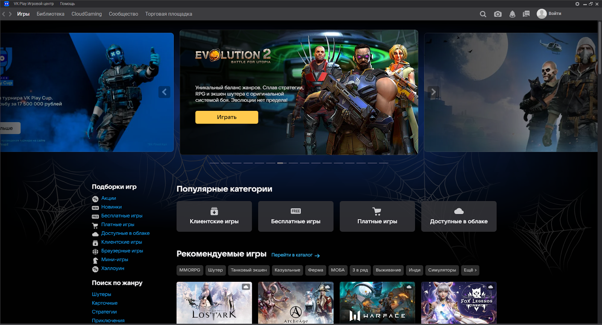
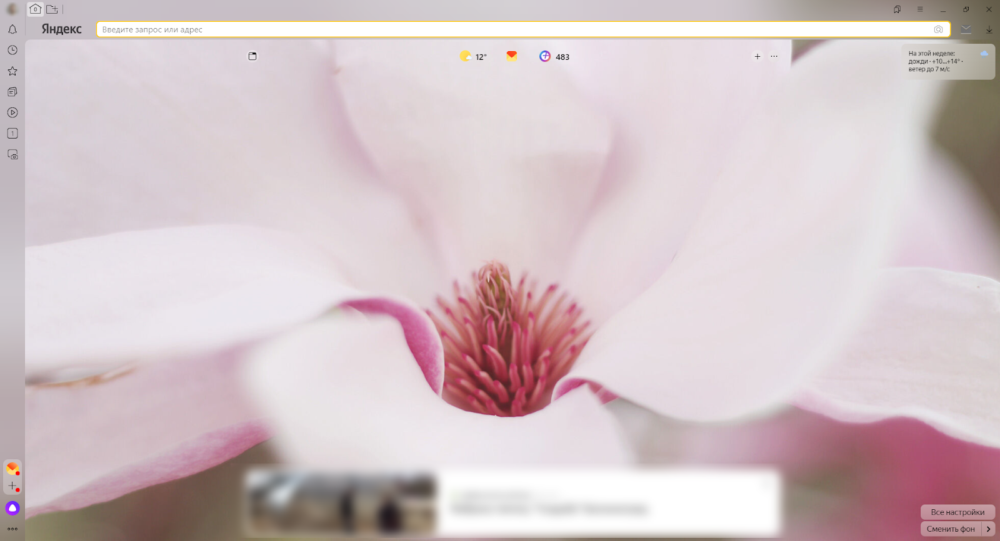
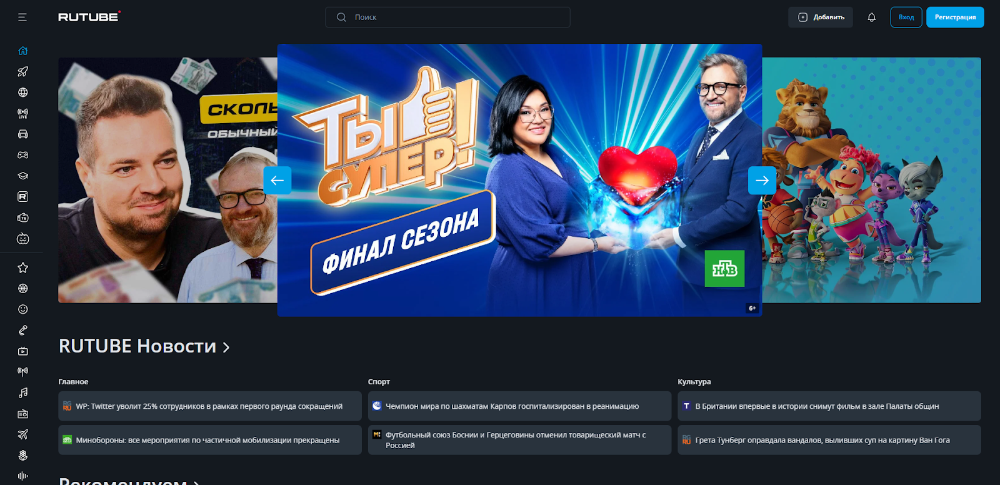

3 программы и приложения для частного пользователя
VK Play
Цифровой магазин и приложение для запуска компьютерных игр. Также предлагает собственную стриминговую платформу и площадку для торговли внутриигровыми предметами. По функционалу аналогичен Steam. VK Play доступен как веб-сервис и приложение для ПК.

Яндекс.Браузер
Может заменить Firefox, Chrome, Safari, Opera и Edge. Яндекс.Браузер в фоновом режиме проверяет трафик на вирусы, защищает от кражи банковских данных и паролей. Поддерживается блокировка рекламы и синхронизация учетной записи на всех устройствах пользователя. Есть встроенный голосовой помощник Алиса. Браузер работает на ПК, планшетах и смартфонах. На поставляемых в Россию мобильных устройствах его предустановка обязательна.

RUTUBE
Видеохостинг и по совместительству онлайн-кинотеатр. Имеет долгую историю. Появился почти одновременно с YouTube, с которым в течение нескольких лет успешно конкурировал в рунете. Не так давно обрел второе дыхание и начал активно развиваться. RUTUBE может использоваться как платформа для видеоблога. На площадку активно заливают собственный контент телеканалы. Здесь есть новости, клипы, фильмы, образовательные видео. Также поддерживается стриминг. RUTUBE доступен как веб-приложение на ПК, а также как отдельное приложение на iOS и Android.

RussPO.ru